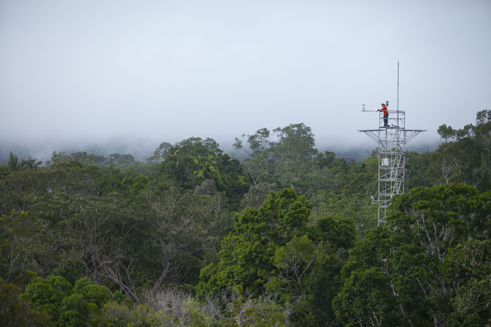
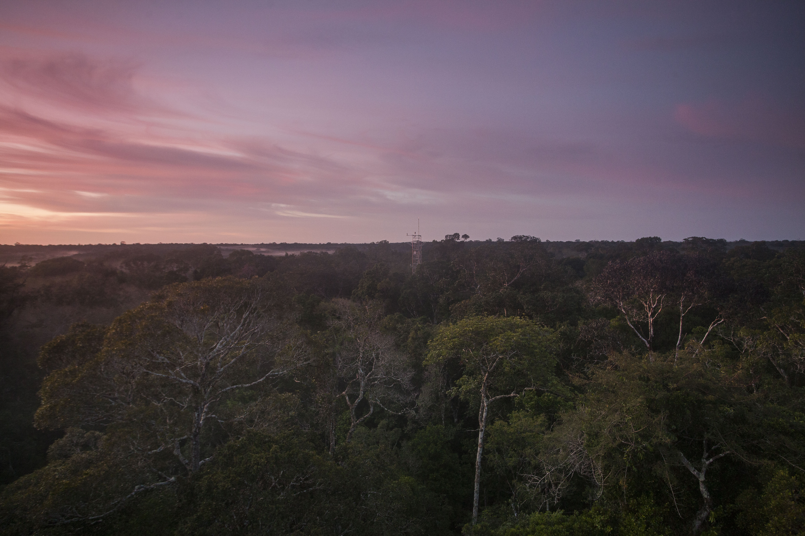
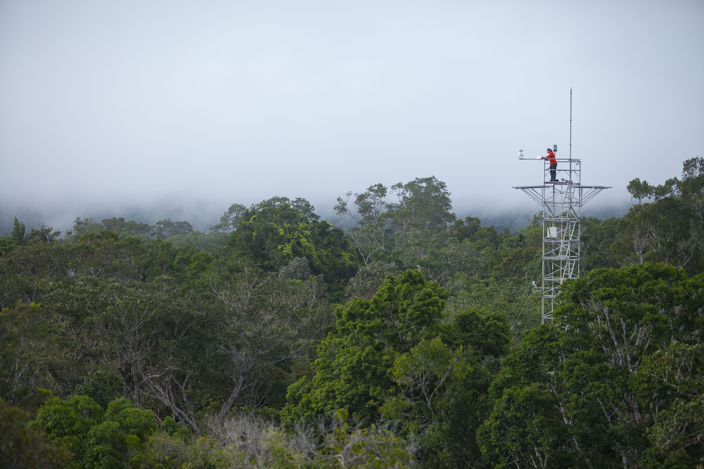
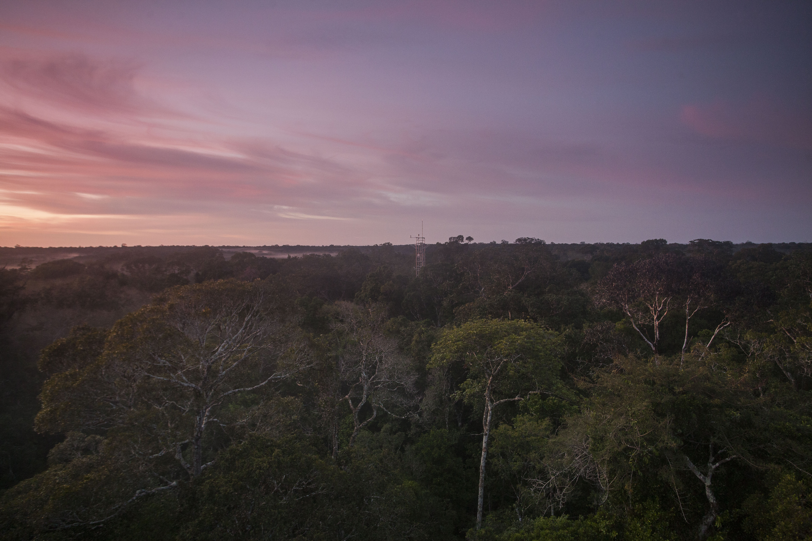

A existência, a magnitude e a duração de um suposto efeito de fertilização de CO2 nas florestas tropicais permanecem em grande parte indeterminadas.
Ler mais
Uma degradação climática da floresta amazônica certamente incorrerá em custos para vários setores sócio-econômicos da região, como agricultura, energia e saúde.
Ler mais
Informar a tomada de decisões e oferecer caminhos para o pensamento transversal em planos estratégicos de curto e longo prazo para conservação ambiental e manutenção de serviços ecossistêmicos na região amazônica.
Ler maisMonitoramento constate do crescimento das árvores, fotossíntese, transpiração, fluxos de água, fenologia e
Monitoramento constate do crescimento das árvores, fotossíntese, transpiração, fluxos de água, fenologia e
Monitoramento constate do crescimento das árvores, fotossíntese, transpiração, fluxos de água, fenologia e
Monitoramento constate do crescimento das árvores, fotossíntese, transpiração, fluxos de água, fenologia e
Monitoramento constate do crescimento das árvores, fotossíntese, transpiração, fluxos de água, fenologia e